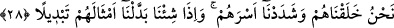

göremediği yön demektir. Bu anlamda arka tarafın insanın göremediği yön olması gâyet
kolay anlaşılmaktadır. Ön tarafın insana nasıl kapalı olduğu meselesine gelince, bazen
insanın ön tarafı da insana kapalı olabilir. Böylece “ön taraf” görülmezlikte “arka
taraf”a benzetilmiş ve istiâre yoluyla ön tarafa da “verâ” denmiş olur.
“Ağırlık” aslında düşünce itibariyle uzun olan bir şeyin sıfatı değil, ağır ve kaba olan
ve hacim itibariyle dünyada yer tutan cisimlerin sıfatıdır. Böyle bir kelimenin “gün”
gibi zaman dilimine sıfat olarak verilmesi, o günün ağırlık ve zorluk bakımından ağır
bir yüke benzemesinden dolayıdır. Bu hâliyle ifâde, bir tablonun diğer tabloya
benzetilmesi gibi bir çeşit istiâre ihtiva etmektedir. Bu âyet-i kerîmede, dünyaya gönül
veren, dünyanın nimetlerine meyleden ve özellikle insanlara zulmedip onlardan rüşvet
alan kimselere bir tehdid vardır.
28. Onları biz yarattık; onların yaratılışını sapasağlam yaptık. Dilediğimizde
(kendilerini yok eder) yerlerine benzerlerini getiririz.
“Onları” bir nutfeden başkası değil, “biz yarattık; onların yaratılışını sapasağlam
yaptık.” Mafsallarını da biz pekiştirdik. Yâni mafsallarının bağını sinirlerle biz
sağlamlaştırdık. Tâ ki böylece kalkıp oturabilsinler, alıp verebilsinler, hareket
edebilsinler. Yaratan ve nimet veren varlığın hakkı, nankörlük edilmek değil,
şükredilmektir. Dolayısıyla bu âyet-i kerîme, bir teşvik anlamı taşımaktadır.
Arapçada “esir” kelimesi rabt; yâni bağ anlamına gelir. Kelimedeki bu “bağ”
anlamından hareketle, bir kimse diğerini herhangi bir bağ ile bağladığında “esera’r-
racule” ifâdesi kullanılır. Âyet-i kerîmede “esr” kelimesinden sonra arada bir mukadder
kelime vardır ki o da, mafsallar anlamına gelen “mafâsıl” kelimesidir.
Şu hâlde âyet-i kerîmenin mânâsı; “onların yaratılışlarını sağlam yaptık, fıtrat ve
endâmları yerli yerindedir” demektir.
Râğıb İsfahânî diyor ki: Bu âyet-i kerîmede insanın yapısındaki hikmete işâret
edilmekte ve bu hikmet üzerinde insanın derinden derine düşünmesi emrolunmaktadır.
Nitekim bir başka âyet-i kerîmede bu mânâda; “Kesin olarak inananlar için
yeryüzünde âyetler vardır, kendi nefislerinizde de öyle. Görmüyor musunuz” (ez-
Zâriyât, 51/20-, 21) buyrulmaktadır.
Bâzı âlimler bu âyet-i kerîmeye şöyle mânâ vermişlerdir: “İdrarınız çıktıktan sonra
idrar yolunuzu, gâitanız çıktıktan sonra gâita yolunuzu sapasağlam yaptık. Böylece o
yolların kasılarak sıhhatli bir şekilde devam etmesini sağladık.” Âyetin mânâsı şöyle de
olabilir: “İdrar ve gâita yolunuzu sizin irâdeniz olmadan gevşemez şekilde sağlam
kıldık.”
Onları değiştirmeyi “dilediğimiz zaman yerlerine başka benzerlerini getiririz.”